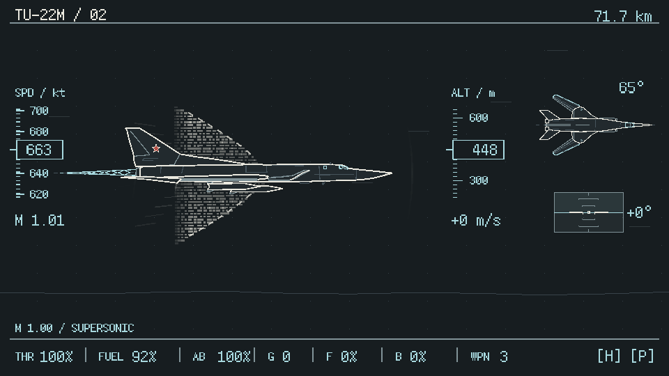

Backlot 为 Agent 提供外部 API 的仿真环境。如果认证、错误响应或限流行为与真实接口不同，同一任务在两边可能得到不同结果。
我对照真实 GitHub REST API，修复 Basic 凭据识别、认证顺序、错误响应及限流行为，并修复 Slack 广播消息行为。
PR #1038：371 个对照场景，修复 108 个原有差异；该组未发现新增回归。
Agent Engineering Evaluation
我参与 Coding Agent 开发，也为它设计评测。
从终端工具的计划执行与错误反馈，到 Windows／Bash 任务评测，再到建模、视频和游戏开发，下面是我做过的工作、遇到的问题和留下的产物。
Backlot 为 Agent 提供外部 API 的仿真环境。如果认证、错误响应或限流行为与真实接口不同，同一任务在两边可能得到不同结果。
我对照真实 GitHub REST API，修复 Basic 凭据识别、认证顺序、错误响应及限流行为，并修复 Slack 广播消息行为。
PR #1038：371 个对照场景，修复 108 个原有差异；该组未发现新增回归。
Nanocoder 支持接入本地模型和多种模型服务，在终端中完成代码任务。我的贡献主要围绕长程任务的计划执行，以及修改代码后的错误反馈。
为了让任务从计划、审批持续推进到执行和验收，我主导了完整 Plan Mode 建设，支持 CLI、Headless 和 VS Code 之间的任务延续与会话恢复。另外实现文件编辑后的自动 LSP 诊断，将错误、警告和位置反馈给下一轮推理，让 Agent 据此修复并复验。
Plan Mode #826、LSP #620 已合入；截至 2026-11-01，累计 5 个上游 PR 获合并。
Tracekit 记录 Agent 的工具调用与策略判断，并提供可核验的执行记录。我参与的是 Qwen Code 接入中的用户输入归因修复。
Qwen Code 的工具结果、Hook 续写和展开文件内容可能被误记为用户指令，影响后续对执行过程与用户约束的判断。我通过 submitted_prompt 区分真实提交，修复记录与约束提取的来源，并用自动化测试和真实 CLI／TUI 操作做前后对照验证。
这套评测检查 Agent 在真实 Windows 环境中能否完成 PowerShell 任务。编码、特殊路径和退出码等问题，需要通过实际执行和最终状态来判断。
我用 KVM / QEMU 搭建 Windows Server 2025 环境，为 PowerShell 5.1 设计五级任务，进一步覆盖有界并发与事务部署；将 Runner、过程 Judge 和隐藏机器验证分开，留存执行轨迹与最终状态。
5 模型 × 5 题，共 25 次有效运行；该矩阵基础设施失败为 0，不等于任务全部通过。
ShellSem-Bench 用 Bash 任务和隐藏场景检查模型提交。一次运行失败，既可能来自模型，也可能来自承载它的 Harness（运行与评测框架），需要分开归因。
我设计任务与隐藏场景，在 Docker 中隔离生成和判分，分别记录生成异常与提交功能结果。后续两题裸模型 / Pi 深测对照中，我结合执行记录定位上下文压缩及僵尸进程耗尽 PID 的问题，修正配置与容器进程回收。
五题、每题 6 个隐藏场景；两模型共 10 次初版 smoke 生成。后续两题深测与初版 smoke 的实验范围分别记录。
这是以 TU22 为案例的 Blender 预演与 AI 视频生成实验。我想观察视频模型能否保留给定的主体关系、动作时序和运镜要求。
我将场景、主体动作和镜头要求转成可执行的 Blender 预演，再接入视频生成模型，组织生成任务与重试、保存输入版本，并检查生成视频中的双机关系、导弹离架和镜头交接。
两侧展示各路线的最新产物，不是同版本输入输出的逐帧 A/B 对照。
渲染侧为 2026-10-30 的 skin-v6 完整预览（20 秒、30fps）；API 侧为 2026-10-27 的 wan3.0-video 双镜头剪辑（10 秒、30fps）。API 飞行镜头使用经检查的 ComfyUI 深度控制小样作为参考，发射镜头使用已认可的 Blender v3 片段，并非左侧的新渲染版本。
固定输入版本并记录哈希，保存任务、候选及帧映射；将文件解码、画面检查和用户验收分开。API 片是尚未加入后续蓝焰合成的剪辑，20 秒渲染仍为质感预览。本例展示工作流与观察方法，不给出未经验证的通用能力评分。
渲染片声音：unfa「Jet Flyby 1 ↗」、Felix Blume「Rocket Launch Rumble ↗」（CC0），以及 U.S. Navy / Tomas Valdes「Phalanx Live Fire ↗」（Public Domain）；其余为原创程序合成。The appearance of U.S. Department of War (DoW) visual information does not imply or constitute DoW endorsement.
Blender Asset Workflow 是面向建模 Agent 的开源工作流。复杂场景需要逐步检查几何与画面，局部修复也需要保护已经认可的部分。
我把建模拆为 Geometry Planning、Blockout、白模预览和局部精修，明确各阶段输入、产物与验收条件；使用独立推理上下文检查实际画面，并通过有限轮次的修复与复验保护已认可的几何基线。
Qwen SFT Lab 是将数学描述转为规范 LaTeX 的专项微调实验。针对模型容易生成错误公式的问题，我训练专项模型，并检查提升来自哪些任务、是否伴随其他能力变化。
我建立结构签名、近亲分组与数据隔离流程，完成 Qwen3-4B LoRA SFT；随后做跨任务评测和长输出重复分析，交付 BF16 / GGUF、Ollama 本地推理与 npm 公式工具。
\bar{x} = \frac{1}{n}
\sum_{i=1}^{n} x_iQWEN3-4B / LoRA SFT同一 56 题开发集：33/56 → 48/56（58.93% → 85.71%）。MATH-500 固定 200 题、4K 输出预算：56.5% → 66.0%。
后者包含格式与可验证性改善；结合跨任务表现和长输出重复分析，不将专项提升等同于全面推理提升。
TU22 是一款由 Harness 驱动开发的浏览器飞行游戏。飞行、镜头、渲染与任务逻辑彼此牵连，只检查代码无法判断它们在实际游玩中是否配合正常；Agent 需要能操作游戏、观察状态，再根据证据修复问题。
我将玩法与交互要求转为开发规格，组织 Coding Agent 持续迭代。引擎侧以 TypeScript 实现自研的 ASCII 世界与字符渲染模块、相机投影和飞行模型，基于 Phaser／Three.js 完成游戏运行与底层三维绘制。
验收侧，我搭建了从真实键鼠输入到只读状态探针、截图与运行报告的调试 CLI，让 Agent 能复现操作、定位失败，再修复并复验，不靠直接改写游戏状态跳过流程。

TU22 已交付三任务公开游戏，并实现首关真实输入 CLI、状态探针与截图验证；YAK-144 为含悬停、侧滚、射击、胜负与重试的单关原型。